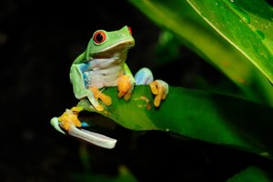

Frogs are amphibians that are known for their jumping abilities, croaking sounds, bulging eyes and slimy skin. They live all over the world and are among the most diverse animals in the world, with more than 6,000 species.
Frogs and toads do have specific traits that define them, however, according to the Maryland Zoo. For example, frogs are mostly aquatic; most toads live on land (but near water). Frogs have teeth; toads do not. Toads of both sexes have a rudimentary ovary called a bidder's organ. Frogs are also typically longer than toads.
